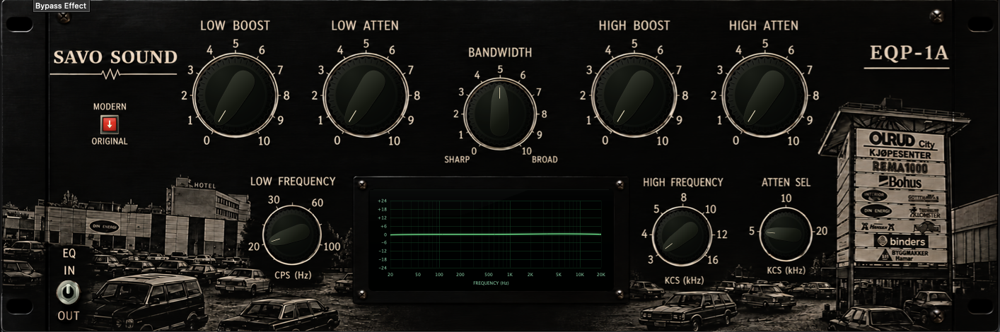

EQP-1A is a dual-circuit passive equalizer inspired by the legendary Pultec EQP-1A, combining classic tube-era design with an entirely separate modern high-end interpretation.
Both circuits retain the distinctive Pultec approach to equalization. Simultaneous low-frequency boost and attenuation create the characteristic bass bump and dip, adding weight while maintaining clarity.
A vintage-style frequency response display shows how the EQ curve changes as the controls are adjusted.
ORIGINAL — CLASSIC TUBE CIRCUIT
Original is our interpretation of the historic Pultec EQP-1A, drawing on its passive LC filter network, vintage transformers and balanced 12AX7/12AU7 tube amplification.
Transformer coloration, tube harmonics and dynamic power supply characteristics contribute to its classic analog character.
MODERN — HIGH-END SOLID-STATE CIRCUIT
Modern reimagines the EQP-1A using a separate passive EQ network, Jensen-inspired transformers, Sowter-inspired inductors and OPA1656-inspired solid-state amplification.
Its design emphasizes transparency, precision, headroom and controlled harmonic coloration while retaining the musical interaction of the passive filters.
TWO CIRCUITS. ONE CLASSIC CONCEPT.
Original and Modern are two distinct signal-path designs, not simply different tonal presets. Each has its own amplification, transformer behavior and sonic identity.
From subtle tonal shaping to the unmistakable Pultec low-end trick.
Unzip the downloaded file and copy EQP-1A.vst3 to:
~/Library/Audio/Plug-Ins/VST3/Restart your DAW and rescan your plugins if necessary.
DOWNLOADUnzip the downloaded file and copy EQP-1A.vst3 to:
C:\Program Files\Common Files\VST3\Restart your DAW and rescan your plugins if necessary.
DOWNLOAD